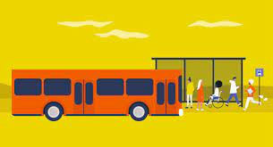
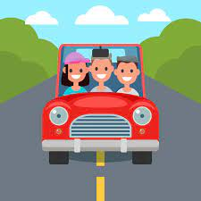
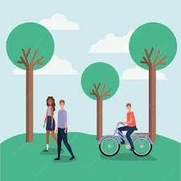
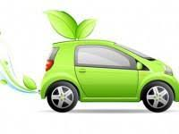

Utilisez les transports publics : Optez pour les transports en commun tels que bus, tramway, métro ou train. Cela réduit le nombre de véhicules sur la route et diminue les émissions de gaz à effet de serre.
Partagez le covoiturage : Si possible, partagez votre trajet avec d'autres personnes. Cela réduit le nombre de véhicules sur la route, contribuant ainsi à diminuer la congestion et les émissions.
Privilégiez le vélo ou la marche : Pour les trajets courts, envisagez d'utiliser le vélo ou de marcher. C'est bon pour votre santé et pour l'environnement.
Encouragez le télétravail : Si possible, discutez avec votre employeur de la possibilité de travailler à distance. Cela peut réduire la nécessité de voyager fréquemment.

Optez pour des véhicules écologiques : Si vous avez besoin de posséder une voiture, choisissez des véhicules économes en carburant ou électriques. Ils émettent moins de polluants atmosphériques et contribuent à la réduction de la dépendance aux combustibles fossiles.
Planifiez vos déplacements : Combine autant que possible vos tâches et déplacements pour réduire la distance totale parcourue. Planifiez vos itinéraires de manière à éviter les embouteillages et à économiser du temps et du carburant